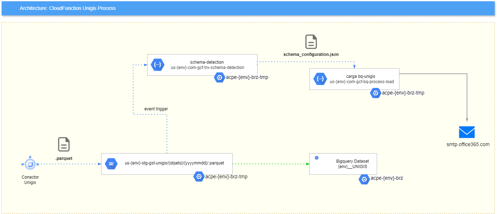

Carga archivos .parquet a BigQuery
Propósito General
Orquestar la carga automática hacia BigQuery desde archivos .parquet depositados en un bucket de Cloud Storage.
- Schema Detection:
us-{env}-com-gcf-trv-schema-detection
- Carga BQ Unigis:
us-{env}-com-gcf-bq-process-load
Consideraciones
- La extensión única aceptada es
.parquet
- El nombre de la cabecera en los archivos debe considerar lo siguiente:
- Solo contener letras, números y guiones bajos
- Comenzar con una letra o guión bajo
- Tener un máximo de 300 caracteres
- Todo campo/columna será cargado a BigQuery con tipo de dato
STRING, a pesar de que en el archivo de carga tenga un tipo de dato diferente
- Por defecto, cada vez que se cargue un nuevo
.parquet se añadirá como append a la tabla, con el nuevo contenido del archivo, pero con el mismo schema
Arquitectura Base - Ejemplo Unigis Process

Recursos
Desarrollo (dev)
| Servicio |
Nombre |
Proyecto |
Descripción |
| Cloud Storage |
us_dev_stg_gst_<iniciativa> |
acpe-dev-brz-tmp |
Bucket que almacena los archivos de la iniciativa asociada |
| Cloud Functions |
us-dev-com-gcf-trv-schema-detection |
acpe-dev-brz-tmp |
Función que detecta el schema del archivo cargado |
| Cloud Functions |
us-dev-com-gcf-bq-process-load |
acpe-dev-brz-tmp |
Función que se encarga de cargar la data hacia BigQuery en la capa BRONZE |
| BigQuery |
- |
acpe-dev-brz |
Proyecto en el cual se carga la información procesada |
Calidad (qa)
| Servicio |
Nombre |
Proyecto |
Descripción |
| Cloud Storage |
us_qa_stg_gst_<iniciativa> |
acpe-qa-brz-tmp |
Bucket que almacena los archivos de la iniciativa asociada |
| Cloud Functions |
us-qa-com-gcf-trv-schema-detection |
acpe-qa-brz-tmp |
Función que detecta el schema del archivo cargado |
| Cloud Functions |
us-qa-com-gcf-bq-process-load |
acpe-qa-brz-tmp |
Función que se encarga de cargar la data hacia BigQuery en la capa BRONZE |
| BigQuery |
- |
acpe-qa-brz |
Proyecto en el cual se carga la información procesada |
Producción (prod)
| Servicio |
Nombre |
Proyecto |
Descripción |
| Cloud Storage |
us_prod_stg_gst_<iniciativa> |
acpe-prod-brz-tmp |
Bucket que almacena los archivos de la iniciativa asociada |
| Cloud Functions |
us-prod-com-gcf-trv-schema-detection |
acpe-prod-brz-tmp |
Función que detecta el schema del archivo cargado |
| Cloud Functions |
us-prod-com-gcf-bq-process-load |
acpe-prod-brz-tmp |
Función que se encarga de cargar la data hacia BigQuery en la capa BRONZE |
| BigQuery |
- |
acpe-prod-brz |
Proyecto en el cual se carga la información procesada |
Código Fuente